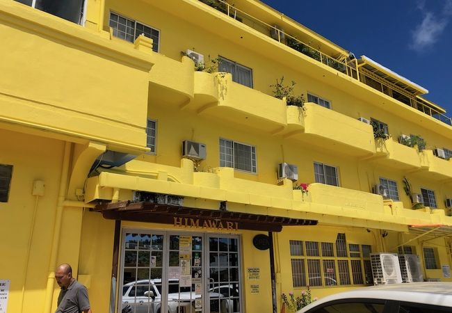

Christopher's Top 3 Restaurants in Saipan
Saipan is a pretty small island, with not too much to do... other than EAT!! This website contains my top 3 restaurants I know will satisfy my taste buds. If you aren't into Asian cuisine, you may leave since all 3 restaurants revolve around the diverse ingredients and flavors that Asian cuisine has to offer.
My Top 3 Restaurants
- Himawari
- Chun Ji
- Savory Kitchen
1. Himawari

Himawari is a Japanese restaurant located in Garapan. They offer competitive prices for great food
compared to most restaurants.
The food could be described as savory as well as fulfilling.
From raw fish to deep-fried pork, to a hot bowl of udon or a nice cold salad,
Himawari has
it all for those with different diets, cravings, or how much of an appetite a person might have.